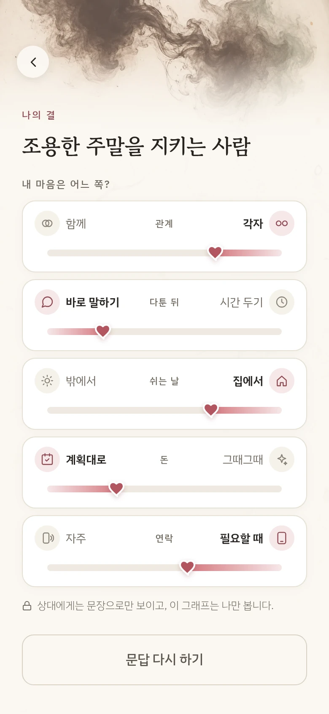
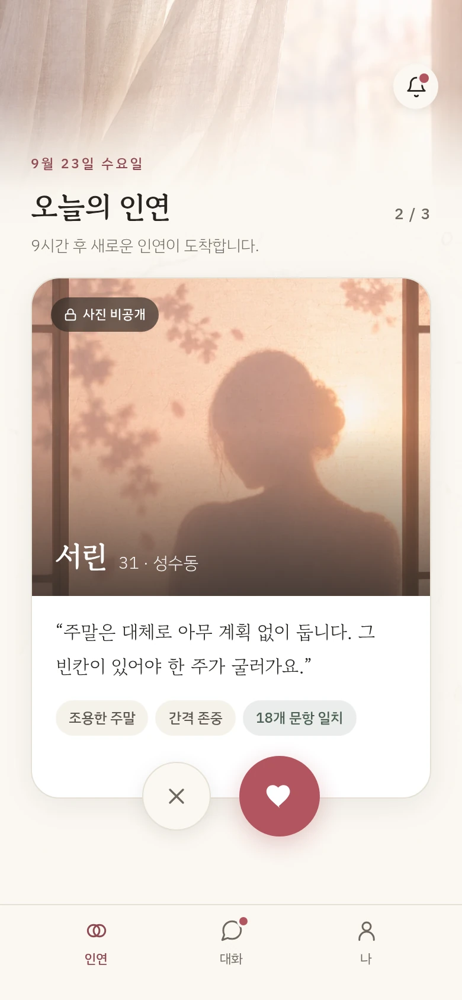
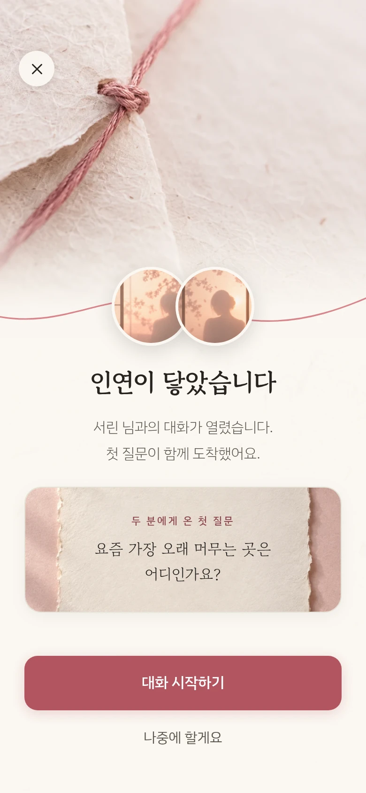
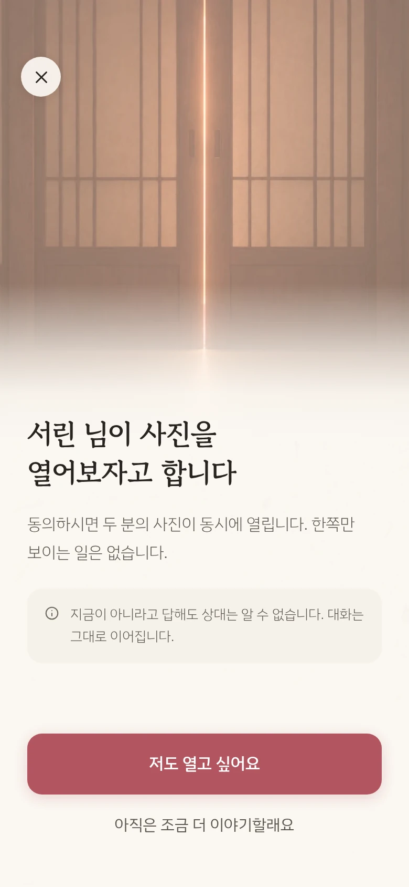
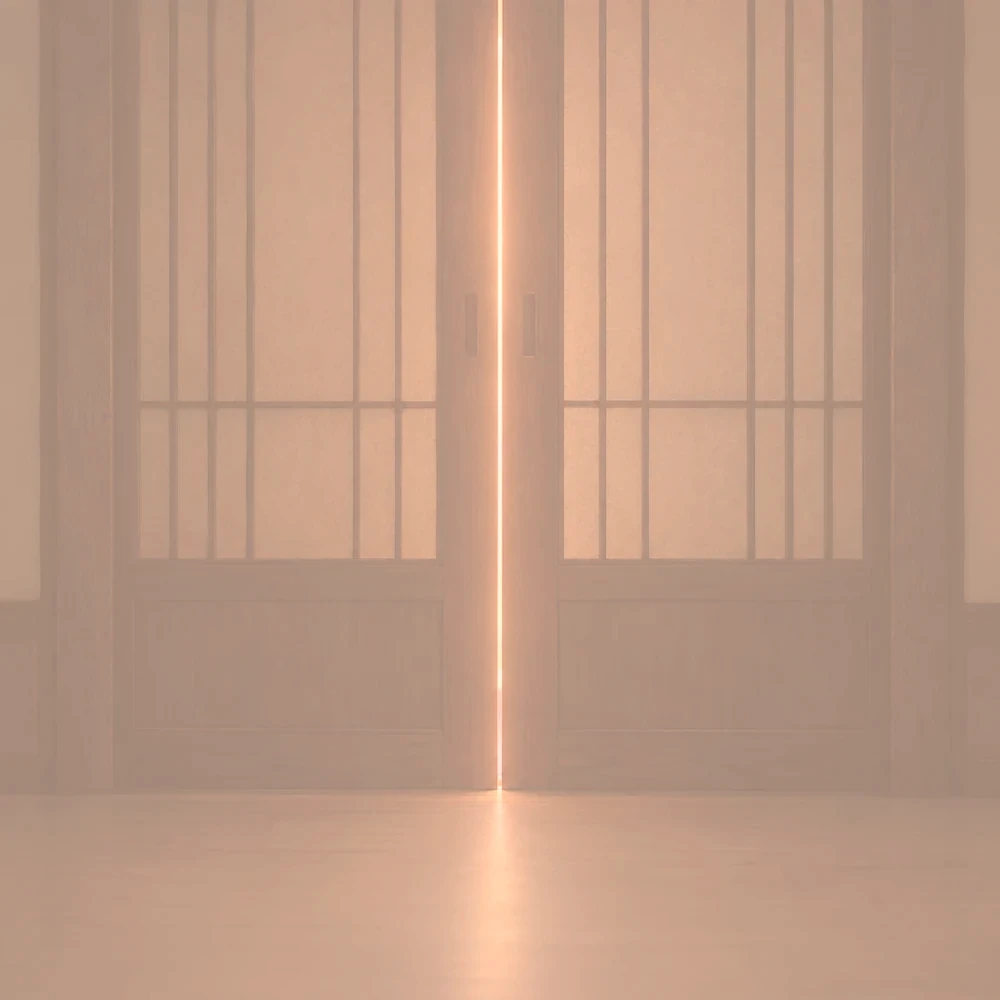

밀어 넘기는 화면이 없습니다
넘기기와 관심은 모두 버튼으로, 한 분씩 천천히 고릅니다.
결의 원칙
사진 한 장으로 넘기고 넘겨지는 일에
지치셨다면, 결은 조금 느린 쪽을 택했습니다.
넘기기와 관심은 모두 버튼으로, 한 분씩 천천히 고릅니다.
매일 아침 9시, 결이 맞는 두세 분이 도착합니다. 다 읽을 수 있을 만큼만.
관심을 보내려면 상대의 답변에 한 줄을 남겨야 합니다.
결의 방식

관계, 다툰 뒤, 쉬는 날, 돈, 연락.
답을 마치면 내 마음이 어느 쪽에
가까운지 한눈에 보입니다.

사진 대신 그 사람이 쓴 문장과,
나와 같은 답을 고른 문항 수를
먼저 봅니다.

마음에 닿은 대목에 한 줄을 적어
관심을 보냅니다. 수락되면 두 분에게
같은 첫 질문이 도착합니다.

한 분이 제안하고 다른 분이 동의하면,
두 분의 사진이 동시에 열립니다.
미리 해보기
앱의 24문항 가운데 세 문항에 먼저 답해 보세요.
답은 어디에도 저장하지 않습니다.
사진 공개
어느 한쪽의 결정만으로는 공개되지 않습니다.

한쪽만 먼저 보는 일은 없습니다.
지금이 아니라고 답해도 상대는 알 수 없고,
대화는 그대로 이어집니다.
제안이 받아들여지면 3초 뒤,
두 화면에서 함께 열립니다.
안전
가입할 때부터 대화를 마친 뒤까지, 여섯 가지를 지킵니다.
휴대폰 본인 확인 뒤, 셀피로 지금 모습을 한 번 더 봅니다. 셀피는 확인 즉시 지웁니다.
성인만 가입할 수 있습니다.
넘기기·차단·대화 나가기는 상대에게 알리지 않습니다. 답이 없는 관심은 7일 뒤 조용히 닫힙니다.
신고하면 차단도 함께 되고, 처리 결과를 알려드립니다.
정확한 위치는 누구에게도 보이지 않습니다.
푸시에는 대화 내용을 싣지 않고, 밤에는 알림을 보내지 않습니다.
요금
결 플러스가 없어도 문답, 소개, 대화,
사진 공개를 모두 할 수 있습니다.
기본
가입하면 바로 쓸 수 있습니다
결 플러스
더 깊이 읽고 싶을 때 · 언제든 해지할 수 있습니다
궁금한 점
궁금했던 이야기를
하나씩 확인해 보세요.
가치관 문답의 답과 소개 문장, 나와 같은 답을 고른 문항 수를 먼저 봅니다. 사진은 대화를 나눈 뒤 두 분이 모두 원할 때 열립니다.
대화 중 한 분이 공개를 제안하고 다른 분이 동의하면, 두 분의 사진이 동시에 열립니다. 한쪽만 보이는 일은 없습니다.
아니요. 넘기기·차단·대화 나가기는 알리지 않습니다. 보낸 관심은 7일이 지나면 조용히 닫힙니다.
매일 아침 9시에 두세 분을 소개합니다. 결 플러스는 다섯 분까지입니다.
만 19세 이상, 휴대폰 본인 확인과 셀피 실물 확인을 마친 분만 활동할 수 있습니다.
문답·소개·대화·사진 공개는 무료입니다. 결 플러스 가격은 출시 때 안내합니다.
iOS와 Android에 함께 출시할 예정입니다. 출시 알림 신청은 준비 중이며, 접수가 열리면 이 페이지에서 안내합니다.
출시 알림을 보내는 데만 쓸 예정입니다. 현재는 신청 접수 준비 중으로 연락처를 수집하지 않습니다. 수집·이용 및 보유 기간은 접수가 시작되기 전에 안내합니다.
출시 알림
출시되는 날, 한 번만 알려드릴게요.
출시 알림 접수를 준비하고 있어요.
지금은 연락처를 수집하지 않습니다.